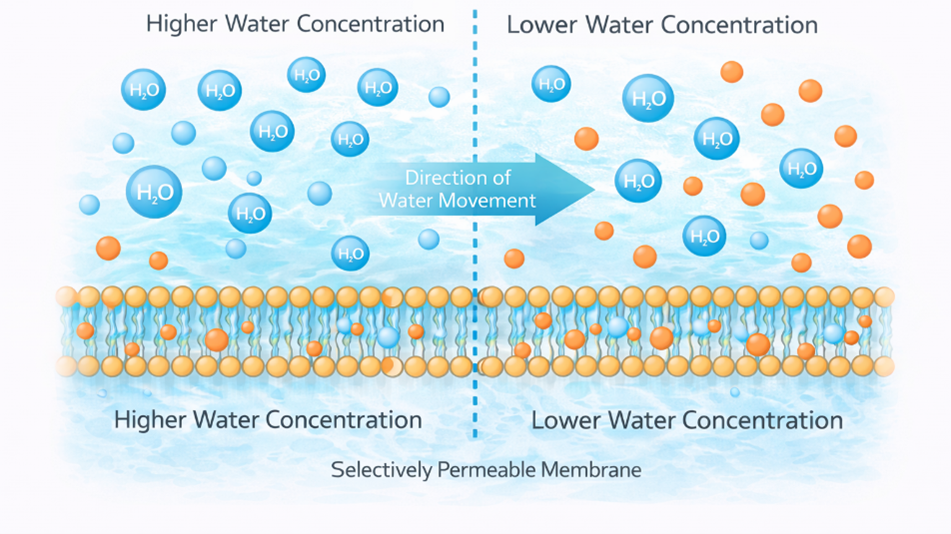
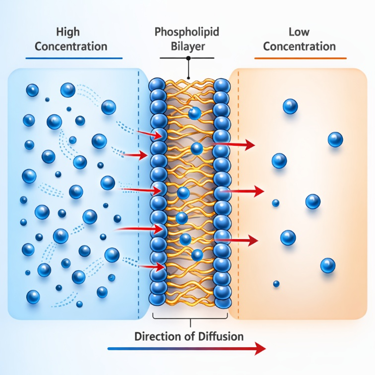
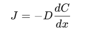
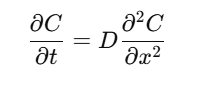

Osmosis and Diffusion in Cells
Introduction
Cells always interact with their environment to maintain homeostasis (internal balance) to support various cellular processes. A water solution that contains nutrients, wastes, gases, salts, and other substances present around the cells makes up the external environment of the cell. The outer surface of the cell’s plasma membrane is exposed to the external environment, while the inner surface of the cell’s plasma membrane is exposed to the cell’s cytoplasm. Thus, the cell’s plasma membrane is responsible for controlling the substances that enter and leave the cell. The plasma membrane allows certain substances to pass through, but not all. Means the membrane is in a selectively permeable nature. Small molecules may pass through the membrane. The movement of substances in and out of the cell is achieved through various mechanisms. If no energy is required for substances to pass through the membrane, the process is called passive transport. Osmosis and diffusion are two types of passive transport mechanisms in the membrane. It depends on the concentration gradient of the substances and the semipermeable nature of the cell membrane.
Osmosis
Osmosis is defined as the passive movement of water molecules across a selectively permeable membrane from an area of higher water concentration to an area of lower water concentration. The process continues until equilibrium is attained between the two solutions. The selectively permeable membrane allows water molecules to pass through while restricting the movement of certain solutes (Fig. 1). Osmosis is important for maintaining the optimal degree of cellular hydration while ensuring the stability of the internal environment.
The principle of osmosis is based on the concept of water potential and osmotic pressure. The movement of water molecules through a semipermeable membrane is based on the difference in solute concentration between two solutions. When a semipermeable membrane separates two solutions of different concentrations, water moves from one solution to the other in such a way that the concentration in both solutions becomes equal. The movement of water creates a pressure known as osmotic pressure. It is the force that acts against the flow of water.

Figure 1. Diagram illustrating the process of osmosis.
Osmotic Pressure and Vant Hoff Equation
Osmotic pressure is a physical property that involves the force exerted by the movement of water across a semipermeable membrane. In biological systems, the movement of water from a region of lower solute concentration (higher water potential) to a region of higher solute concentration (lower water potential) by the process of osmosis continues until equilibrium is achieved or until the pressure exerted by the movement of water balances the difference between the concentrations. This pressure that stops the movement of water is called osmotic pressure.
The osmotic pressure can be mathematically expressed by the equation given by Van’t Hoff. This equation relates osmotic pressure to the concentration of the solute particles found in a solution.
Where:
• π = Osmotic pressure
• i = Van ’t Hoff factor (number of particles produced when a solute dissolves)
• C = Molar concentration of the solute
• R = Universal gas constant
• T = Absolute temperature (in Kelvin)
From the equation, it is evident that osmotic pressure is a function of the number of solute particles found in the solution, the temperature of the system, and the extent to which the solute dissociates into particles when dissolved. Some substances dissociate into ions when they are dissolved in a solution. This dissociation increases the concentration of the solution, hence increasing the osmotic pressure. Sodium chloride is a good example of a substance that dissociates into ions.
In biological or physiological systems, the term used to describe osmotic pressure is usually osmolality or osmolarity, which is a measurement of the concentration of all the particles in a solution that exert osmotic pressure. Osmolality is the number of osmoles per kilogram of solvent, whereas osmolarity is the number of osmoles per litre of solution. This helps in measuring the osmotic pressure in a solution and predicting the flow of water across a cell membrane. Osmolality is an important term that is used in a biological context since it can be used to measure the actual number of dissolved particles contributing to osmotic pressure without regard to the composition of the solution. Normally, the osmolality of physiological fluids such as blood plasma ranges between 275 and 295 mOsm/kg. If the osmolality of the extracellular fluid increases, water leaves the cell. This causes the cell to shrink. If the osmolality of the extracellular fluid decreases, the cell swells.
Tonicity and osmotic conditions of a solution
When a cell is placed in a solution, the direction of water movement is based on the concentration of solutes. The concentration of solutes is referred to as tonicity. Tonicity is a term used to determine the movement of water during osmosis. The movement of water during osmosis is based on the concentration of solutes. The concentration of solutes can be classified as hypotonic, hypertonic, or isotonic.
Hypotonic Solution: A hypotonic solution is a solution whose solute concentration is lower outside the cell membrane compared to the solute concentration inside the cell. This implies that the concentration of water molecules is higher outside the cell. Due to the difference in solute concentration, water enters the cell via osmosis. As water enters the cell, it starts to swell due to increased internal pressure.
Isotonic Solution: An isotonic solution is one in which the concentration of the solute inside the cell is the same as that of the solution outside the cell. In this case, the rate of movement of water molecules into and out of the cell is the same, meaning that no movement of water takes place. The cell will be of normal size and shape since equilibrium is reached inside the cell. Isotonic solutions are very important in the body, for example, in that blood plasma is isotonic with red blood cells, thus preventing them from shrinking or swelling.
Hypertonic Solution: A hypertonic solution is one in which the concentration of solute outside the cell is higher compared to the concentration of solute inside the cell. Therefore, the concentration of water is lower outside the cell. Hence, water is drawn out of the cell by the process of osmosis towards the region with the higher concentration of solute. This results in shrinking or shrinkage of the cell due to the loss of water or dehydration of the cell’s cytoplasm. This phenomenon is referred to as crenation in animal cells, while in plant cells it is referred to as plasmolysis.
Osmosis is a crucial process in human physiological processes within the body. It helps to balance fluids within the cells and tissues of the body and ensure that cells are of normal size and shape. Osmosis also occurs in the kidneys, where it helps to ensure the reabsorption of water from the urine. This process helps to balance fluids within the body. Osmosis occurs in the cells of the intestines, helping to ensure the digestion of nutrients. Thus, osmosis is an essential process for the maintenance of fluids within blood plasma.
Osmosis has several important applications in both biological and technological fields. In medical science, IV solutions are carefully formulated to be isotonic to blood plasma to avoid damage to red blood cells. Osmosis is also applied in dialysis treatments, in which waste products are removed from the blood by semipermeable filters. In plant biology, osmosis maintains turgor pressure in plant cells. Furthermore, osmosis is employed in water purification equipment such as reverse osmosis technology to clean water for human consumption.
Diffusion
Diffusion is defined as the process by which molecules tend to move from an area of high concentration to an area of low concentration due to their random motion. The process continues until the molecules are equally distributed. At this point, equilibrium is attained. The process of diffusion can be observed in gases, fluids, and cell membranes. The process does not require energy. In the body, the process of diffusion transports small molecules such as oxygen and carbon dioxide through the cell membrane.
The principle that governs the diffusion is the concentration gradient. This is the difference in the concentration of a substance between two points. Molecules always diffuse down their own gradient until equilibrium is achieved. The rate at which diffusion occurs is controlled by several factors, such as the size of the concentration gradient, temperature, surface area, membrane permeability, and the size of the diffusing molecules. Diffusion into the cell membrane is especially relevant for small nonpolar molecules like oxygen (O₂) and carbon dioxide (CO₂) that can pass through the lipid bilayer (Fig.2).

Figure 2. Diagram illustrating the process of Diffusion.
Types of Diffusion
Diffusion is classified based on how molecules move across membranes and whether transport proteins are involved. In cell physiology and the theory of membrane transport, there are three major classifications of diffusion. This classification is necessary since different molecules have different methods of passing through the cell membrane.
Simple Diffusion: Simple diffusion is the movement of molecules through the cell membrane, which involves the direct passage of the molecules through the cell membrane without the aid of any transport protein. Small, non-polar molecules are capable of simple diffusion, e.g., oxygen, carbon dioxide, etc.
Facilitated Diffusion: Facilitated diffusion is a type of passive transport, which involves the movement of molecules from a region of higher concentration to a region of lower concentration with the aid of a membrane protein, e.g., channel protein or carrier protein. This type of diffusion is essential for the movement of those molecules that cannot pass through the cell membrane, e.g., glucose, ions, etc.
Channel-mediated diffusion: It’s a special type of facilitated diffusion. In facilitated diffusion, the ions or the water molecules pass through the protein channels in the membrane. The protein channels act as pores that allow molecules to pass through the membrane quickly. Some of the channels are known as gated channels. The gates may open or close in response to a signal.
Mathematical Equation for Diffusion
The process of diffusion can be quantitatively described by Fick’s Laws of Diffusion. The laws describe how the rate of diffusion depends on concentration gradients and other physical factors.
Fick’s First Law of Diffusion
The rate of diffusion in a membrane is proportional to the concentration gradient. The equation is:

• J = diffusion flux (amount of substance diffusing per unit area per unit time)
• D = diffusion coefficient
• dC/dx = concentration gradient
• The negative sign indicates movement from a higher concentration to a lower concentration
Fick's first law of diffusion explains the correlation between the rate at which a given material diffuses and the concentration gradient over a given distance. This law explains that the rate at which a diffusing material diffuses is proportional to the concentration gradient. This means that the rate at which the molecules will be diffusing will be faster if the difference in concentration between the two points is larger. This law is most applicable in the explanation of the movement of molecules from one point to another in the body. This law also explains that the rate at which a material diffuses depends on the diffusion coefficient (D) and the distance over which the diffusion occurs. This means that the rate at which the diffusion occurs will be lower if the distance over which the diffusion occurs is larger. Therefore, Fick’s First Law emphasises that diffusion is affected by various factors, including concentration gradient, membrane thickness, membrane surface area, and properties of diffusing molecules, all of which affect the rate of transport of substances in living organisms or physical systems.
Fick’s Second Law of Diffusion
Fick’s second law describes how concentration changes with time during diffusion:

• C = concentration of the diffusing substance
• t = time
• D = diffusion coefficient
• x = distance
Fick’s first law of diffusion discusses the rate of diffusion, while Fick’s second law of diffusion discusses non-steady diffusion, where the concentration gradient is constantly changing with time. The law states that the distribution of molecules in a system will change with time until equilibrium is reached. When a substance starts diffusing, its concentration is not evenly distributed in the given medium, but as time passes, the substance will begin to diffuse, and its concentration will decrease evenly throughout the medium until equilibrium is reached.
Biological Significance of Diffusion
Diffusion is an important physiological process in living organisms. In the respiratory system, oxygen is required for respiration. The oxygen diffuses from the lungs to the bloodstream. Similarly, carbon dioxide is a waste product that diffuses from the bloodstream to the lungs for exhalation. In the tissues of the body, glucose diffuses from the blood vessels to the tissues. Similarly, waste products of metabolism also diffuse from the tissues to the blood vessels. In the body, diffusion is also important for cellular communication. In the cells, the molecules are transported from one cellular compartment to another. This is helpful for metabolic functions.